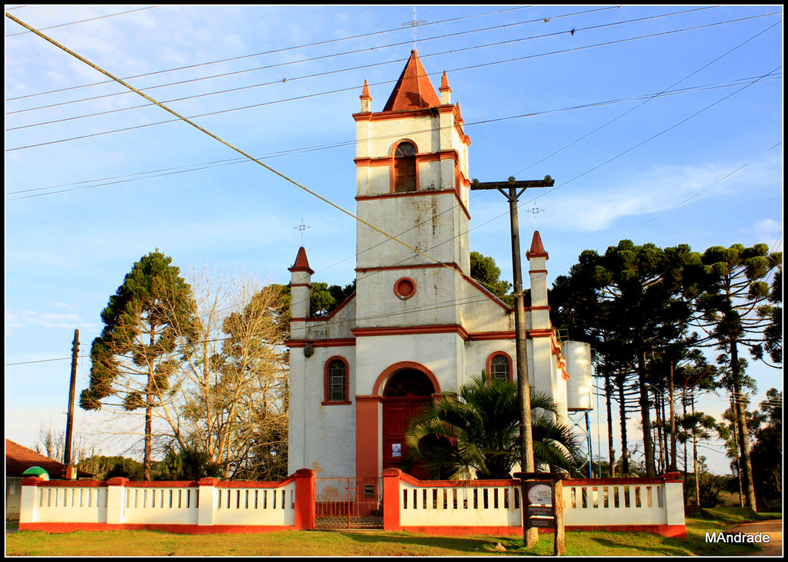
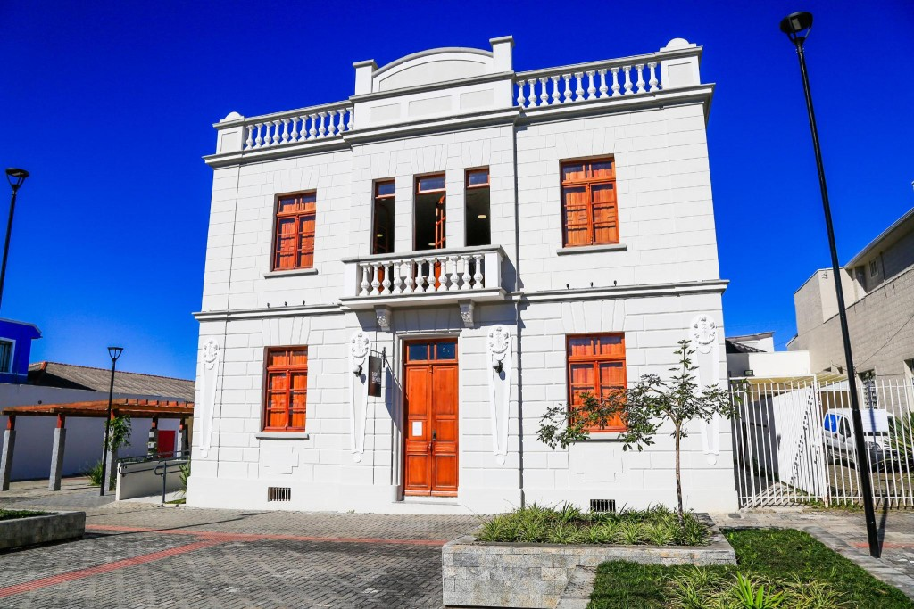
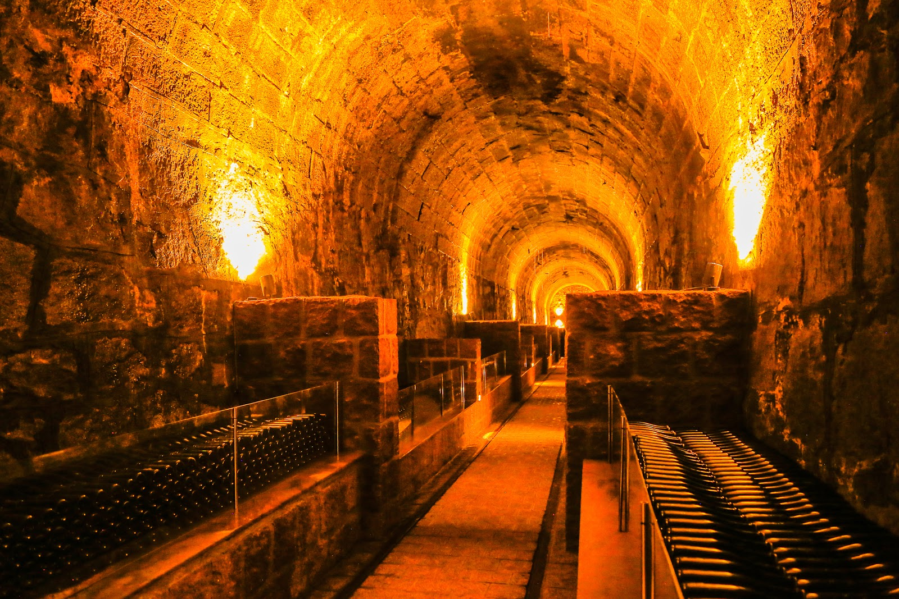
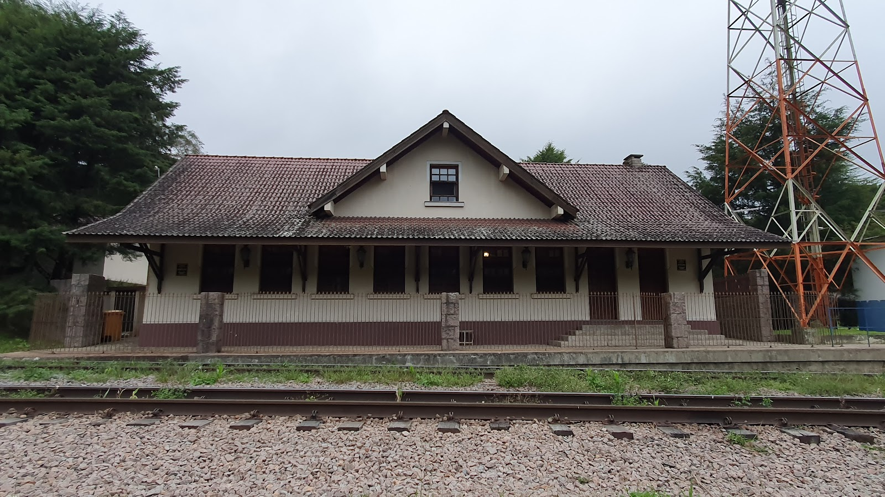

Colônia Santa Maria do Novo Tirol - Parque Trentino
Endereço: R. Nova Tirol, sn, Piraquara - PR, 83301-644 No trecho em que a estrada Nova Tirol, na zona rural de Piraquara corta ao meio a represa da cidade, vê-se no fim do caminho a igreja de Nossa Senhora da Assunção. Erguida em 1878, a igrejinha é a joia do roteiro de turismo rural conhecido como Caminho Trentino, um dos mais bonitos roteiros turísticos da região metropolitana de Curitiba.
Casa Da Memória Manoel Alves Pereira
Endereço: PR-506, 30-120 - Centro, Piraquara Telefone: (41) 3590-3605 Horário de funcionamento: Domingo Fechado Segunda-feira 09:00–12:00, 13:00–17:00 Qerça-feira 09:00–12:00, 13:00–17:00 Quarta-feira 09:00–12:00, 13:00–17:00 Quinta-feira 09:00–12:00, 13:00–17:00 Sexta-feira 09:00–12:00, 13:00–17:00 Sábado Fechado Memória e História foi pensado visando a promoção da preservação do patrimônio material e imaterial e a comunicação do acervo bibliográfico, arquivístico e museológico do município de Piraquara. Aqui se pretende expor a história e a memória produzida e guardada por muitas mãos e contada por muitas vozes. Um enredo traduzido em imagens, sons, escritas e objetos.
Cave Colinas de Pedra
Túnel ferroviário construído em 1883 que abriga uma cave de envelhecimento de vinho espumante natural. O acesso até a Cave é feito por uma plataforma elétrica, capaz de transportar até 15 passageiros, num trajeto de 154 metros adentro do túnel. Endereço: R. Antônio Brudeck, 100 - Roça Nova, Piraquara - PR, 83307-500 RESERVAS PARA VISITAÇÃO NO SITE http://www.cavecolinasdepedra.com.br/ Telefone: (41) 99667-5000
Estação Roça Nova
Endereço: Recreio da Serra, Piraquara - PR, 83307-500. Telefone: +55 41 99684-0546. A Estação Roça Nova, cuidadosamente restaurada seguindo as principais características da época, abriga em seus dois pavimentos o restaurante da Cave Colinas de Pedra.